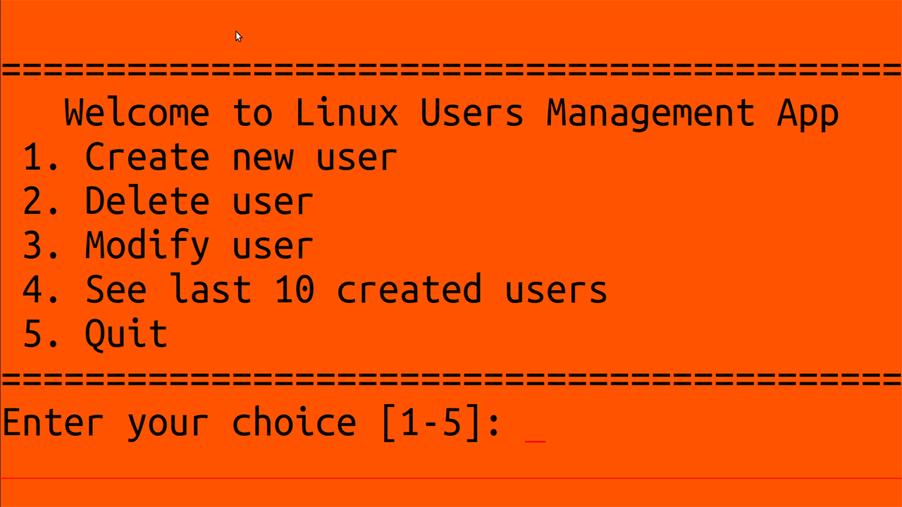

Rose - Enterprise Java App
Web application that can be used to book halls called Rose Banquet Halls Booking System.

Play Tic Tac Toe!
The player who succeeds in placing three of their three marks in a row wins the game.

Play Ultimate Tic Tac Toe!
Ultimate tic-tac-toe game composed of nine tic-tac-toe boards arranged in 3-by-3 grid.

Play Rock Paper Scissors!
Test your strategy against the artificial intelligence in this rock-paper-scissors game.
Star - Workstation Java App
Interactive 2D graphics application draws a five-pointed star with help of the OpenGL.

Linux Users Management App
Linux script that can create, retrieve, update and delete user accounts in /etc/passwd.